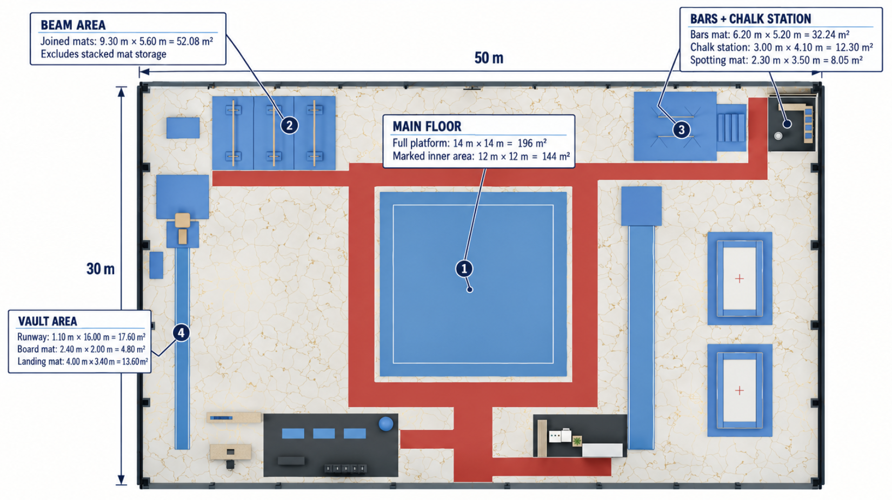
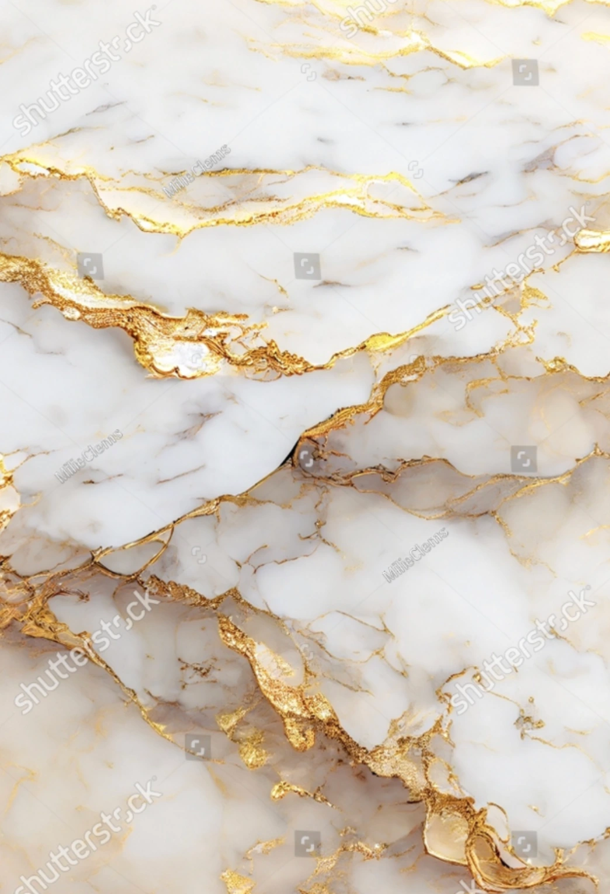
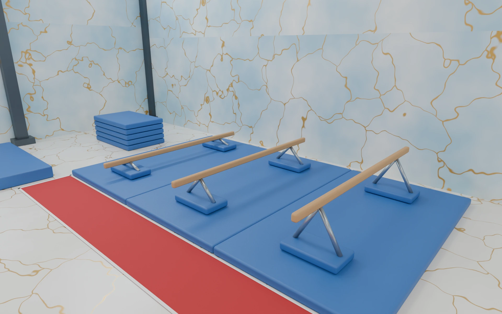
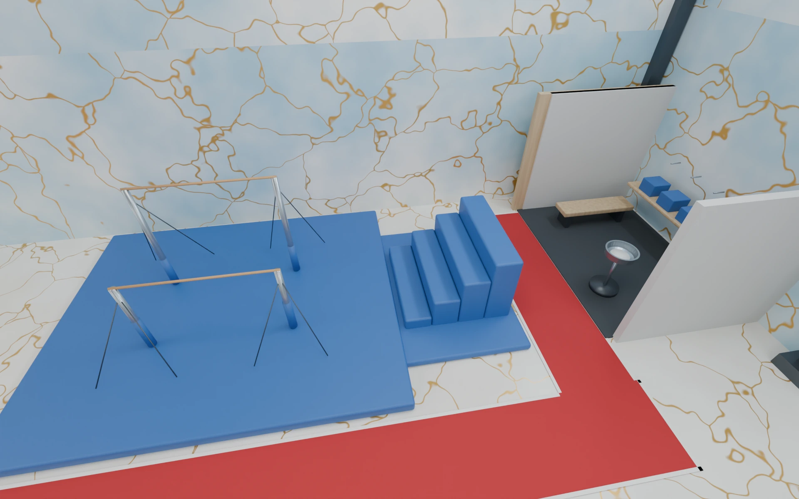
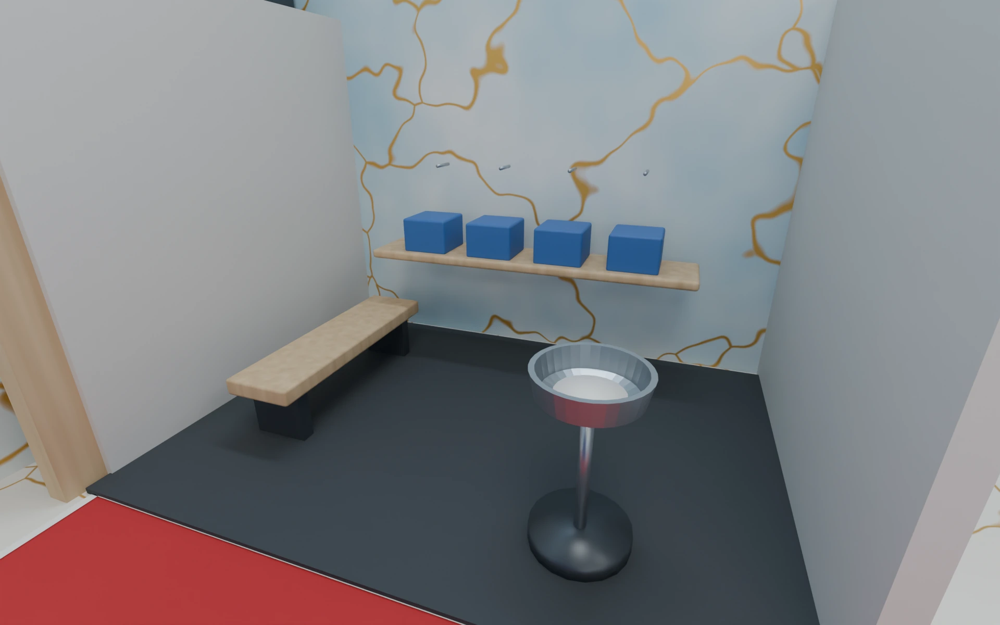
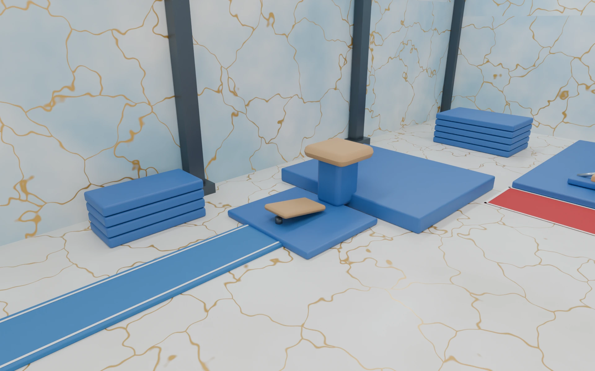
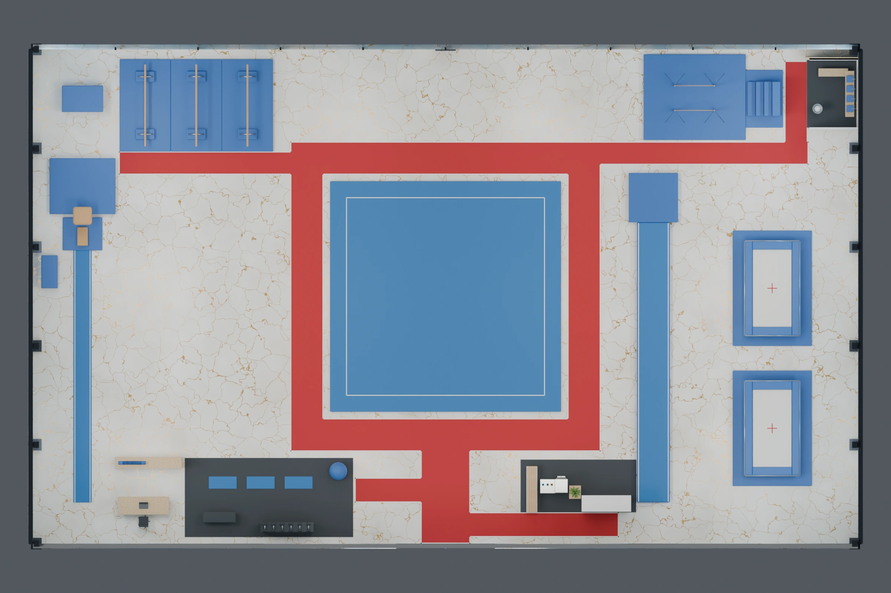

Remove distractions
Coordinate-based edits removed unintended people so the spatial arrangement could be inspected more clearly.
02 / 3D environment / 2026
A future training hall organized around a central spring floor and a visible perimeter route. From spatial concepts and material references to a dimensioned plan, detailed Blender views, and a camera walkthrough.

One floor.
Connected routines.
The classroom brief considers repeated beam practice, grip and chalk preparation, group warm-up, and hydration. Three organizational ideas were compared: a floor-centered perimeter loop, parallel activity bands, and coach-linked clusters.
The later images develop the floor-centered direction. A continuous red route makes movement legible while the blue apparatus and marble-style finishes give the hall a coordinated identity.
These are fictional classroom assumptions. Apparatus clearances, material suitability, and construction feasibility have not been validated.


Coordinate-based edits removed unintended people so the spatial arrangement could be inspected more clearly.
A red pathway with white borders distinguishes circulation from the blue training surfaces.
Blue, white, and gold marble-style finishes connect the architectural palette to the equipment.
The 50 m × 30 m hall places the main floor at the center, with beams at the upper left, bars and chalk preparation at the upper right, and the vault runway along the left side. The red path connects these activity areas.

| Area | Dimensions | Area shown |
|---|---|---|
| Main floor platform | 14 m × 14 m | 196 m² |
| Marked inner floor | 12 m × 12 m | 144 m² |
| Joined beam mats | 9.30 m × 5.60 m | 52.08 m² |
| Bars mat | 6.20 m × 5.20 m | 32.24 m² |
| Chalk station | 3.00 m × 4.10 m | 12.30 m² |
| Spotting mat | 2.30 m × 3.50 m | 8.05 m² |
| Vault runway | 1.10 m × 16.00 m | 17.60 m² |
| Vault board mat | 2.40 m × 2.00 m | 4.80 m² |
| Vault landing mat | 4.00 m × 3.40 m | 13.60 m² |
Transcribed from the supplied dimensioned image. Beam-mat area excludes stacked mat storage.
These references guided the white, blue, and gold material palette, as documented in the Week 4 design-process PDF.

I used the light base and irregular gold veining to define the marble-style finish.
Image credit: Shutterstock / MillieClowns, as identified in the PDF. Source: process PDF, page 7.
I used the soft gray-blue transitions and gold accents to refine the balance of light tones and metallic detail.
Reference supplied in the process PDF, page 7. Original creator is not identified in the supplied document.
I used the stronger blue areas with white and gold veins to guide the wall-panel color change and coordinate it with the blue training equipment.
Visible watermark: Freepik. Individual creator is not identified in the supplied document. Source: process PDF, page 8.
I carried the palette and veining into the revised wall finishes. The blue and white connect the architectural surfaces to the training areas, while gold adds detail. I kept the red pathway with white borders as the distinct circulation cue.
Design notes from the process PDF, pages 7–8. Reference images and visible watermarks are preserved.
A closer look at the modeled training zones, preparation spaces, and circulation. Select any view to inspect the full image.

Three parallel beams on joined blue mats, beside the red circulation path.

The bars, stacked mats, and nearby preparation station share an edge of the perimeter route.

A chalk bowl, bench, shelf, and wall hooks define the preparation alcove.

The runway leads to the springboard, vault table, and blue landing mat.

The central spring floor is framed by the red route, with beam and bar areas beyond.

The roof-free overview shows how the central floor, apparatus, and support spaces connect.
The supplied camera preview moves from an elevated overview into the training hall. Its documented direction follows the red route toward the vault, beams, bars, and hydration area.
Supplied Blender preview · 640 × 360 · Silent
Download video ↓Video linked in the process report ↗Comparing layouts made the relationships between training, coaching, and circulation explicit. Localized edits then made it possible to review one change at a time while preserving the overall scene.
The concept image communicates an intended atmosphere; the Blender walkthrough presents the modeled space over time. The full report records the brief, alternatives, visual references, revisions, and camera direction.
Read the full design process PDF · 27 MB ↗